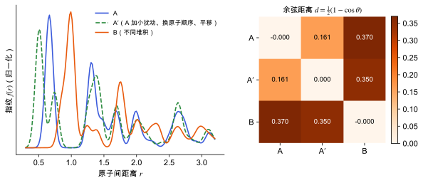

位置、路径与目录
晶体结构相似度与去重
方法节点领域：统计力学与采样研究线：结构预测与能量景观晶体结构生成v0.2 · 2026-11-10
草稿已有正文，但来源和推导还没有核查完，不能当作定论。
怎样判断两个分子晶体结构是不是同一个：比较分子位置与取向、粉末图谱或指纹的几类做法，它们决定 CSP 结构池怎么去重，也决定生成模型的“唯一性、新颖性”怎么算。
判断两个晶体结构是不是“同一个”比看起来难。同一个晶体可以：
- 选不同的晶胞（不同的晶胞向量组合、超胞）；
- 选不同的原点（整体平移）；
- 原子编号顺序不同（置换）；
- 有小的数值差异（优化收敛不完全、不同方法给出的晶胞略有差异）。
直接比较坐标会把这些都当成“不同”。所以需要一个相似度：对上面这些变化不敏感，但对真正不同的堆积方式敏感。
一种思路是指纹 (fingerprint)：把结构转换成一个对平移、置换、晶胞选择都不变的描述，比如原子对距离的分布，然后比较两个分布。另一种思路是叠合：取出每个结构里的一团分子，旋转平移使两团尽量重合，看剩余偏差。

用二维周期玩具模型真实计算：A′ 由 A 加微小扰动、打乱原子编号并整体平移得到；B 是另一种堆积。左三图：结构。右上：高斯展宽的对距离指纹。右下：余弦距离矩阵，A 与 A′ 几乎为 0，A 与 B 明显不为 0。
| 符号 | 是什么 | 图里对应 |
|---|
| A、A′ | 同一结构（扰动、置换、平移后） | 左一、左二 |
| B | 不同堆积 | 左三 |
| F(r) | 对距离指纹 | 右上三条曲线 |
| d | 余弦距离 | 右下矩阵中的数字 |
二维玩具模型中 d(\mathrm{A},\mathrm{B}) \approx 0.37；d(\mathrm{A},\mathrm{A}') \approx 0。
其他方法
- 粉末 X 射线衍射图谱比较：计算两个结构的模拟粉末图谱，比较其相似度。它天然对晶胞选择不变，也能直接与实验比较；但对晶胞的小变化敏感（峰位移动），常需要先对晶胞做小的变形再比较。
- 刚性分子的位置与取向：把每个分子看成刚体，用质心位置加取向（如四元数）描述，直接比较堆积。触发本条目的一篇 JCTC 论文提出了基于对偶四元数 (dual quaternion) 的刚性分子堆积相似度指数 [Vázquez-Hernández et al. 2026]（这里只根据题目概括，细节需读原文）。
- 基于对称性约化的晶胞：先把晶胞化为约化晶胞 (Niggli reduced cell)，再比较晶格参数和原子坐标；对数值噪声敏感。
阈值
所有方法最终都要定一个阈值：小于阈值就算同一个结构。这个阈值不是物理常数，需要用一组已知相同和已知不同的结构对来标定。
- CSP 去重：MACE 预优化后的结构池里有大量重复；去重太松会合并真正不同的多晶型，太紧会让能量窗口被重复结构占满（见 晶体结构预测：搜索与排序）。
- 去重要在优化后做：两个起点不同的结构优化到同一个极小时才是重复；优化前比较没有意义。
- 能量加结构双重判断：常见做法是先按能量和密度粗分组，组内再做结构比较，以节省计算。
- 生成模型的指标：生成模型常报告“有效性、唯一性、新颖性”，其中唯一性和新颖性完全依赖用哪个相似度和阈值判断“相同”（见 晶体结构生成模型）。触发本条目的另一篇 arXiv 预印本是关于对称性约束的晶体生成 Transformer [Liu et al. 2026]（这里只根据题目概括）。比较不同论文的新颖性数字时，要先确认它们用的是同一个匹配方法和容差。
- 原子指纹忽略分子身份：对分子晶体，只看原子对距离可能把构象不同但堆积相似的结构判为相同。
- 对氢原子位置敏感：不同方法给出的 H 位置差异大（见 质子归属：盐与共晶），比较时通常只用非氢原子。
- 晶胞参数差异：同一结构用不同泛函优化，晶胞可能差几个百分点，粉末图谱峰位移动，被误判为不同。
- 阈值不报告：去重结果和新颖性数字离开阈值就无法复现。
- 手性：对映异构的堆积在纯距离指纹下无法区分，需要额外判断。
相关条目能量景观与多晶型
参考资料
论文Chisholm & Motherwell 2005
J. A. Chisholm, S. Motherwell, COMPACK: a program for identifying crystal structure similarity using distances, J. Appl. Cryst. 38, 228 (2005)
位置：分子簇叠合比较（COMPACK）
尚未实际查阅，目前只是拟查阅书目
论文Oganov & Valle 2009
A. R. Oganov, M. Valle, How to quantify energy landscapes of solids, J. Chem. Phys. 130, 104504 (2009)
位置：基于原子间距分布的结构指纹与距离
尚未实际查阅，目前只是拟查阅书目
论文Vázquez-Hernández et al. 2026
H. Vázquez-Hernández et al., Rigid Molecule Packing Similarity Index Based on Dual Quaternions, J. Chem. Theory Comput. (2026)
位置：刚性分子堆积相似度（雷达触发文献）
尚未实际查阅，目前只是拟查阅书目
论文Liu et al. 2026
J. Liu et al., Site-orbit masked twin-branch Transformer for symmetry-constrained crystal generation, arXiv:2611.02906 (2026)
版本：arXiv 预印本，按引用的版本号核对；位置：对称性约束的晶体生成（雷达触发文献）
尚未实际查阅，目前只是拟查阅书目
论文Price 2014
S. L. Price, Predicting crystal structures of organic compounds, Chem. Soc. Rev. 43, 2098 (2014)
位置：有机分子 CSP 的流程、能量模型与难点
尚未实际查阅，目前只是拟查阅书目
论文雷达里的相关论文
按关键词匹配，最近的在前；点开在雷达里阅读。
关联与核验
核验与修订
暂无核验记录。
修订记录
- v0.22026-11-10初稿正文：为什么难判断，需要的不变性，指纹与余弦距离，分子簇叠合（COMPACK），粉末图谱比较，刚性分子取向的比较，阈值选择，在 CSP 去重和生成模型指标中的作用，常见坑；配图 1 张（真实计算二维玩具指纹）。由 doi:10.1021/acs.jctc.6c01293 与 arXiv:2611.02906 触发
发现问题
在 GitHub 上公开提交纠错，会附上节点编号和版本，不含你的笔记。
提交纠错